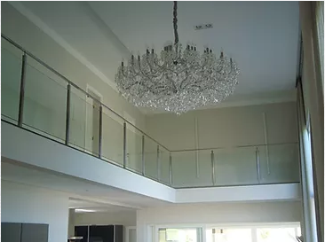
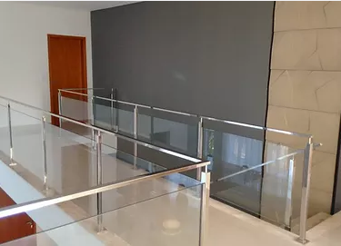

A Molinari Soldagens chega ao mercado de trabalho com o conceito de qualidade de produto e sofisticação, com uma ampla linha de produtos confeccionados em aço inoxidável, visa atender aos setores de construção civil, restaurantes e lanchonetes, laboratórios, industrias farmacêuticas e residencias de alto padrão. Nossos produtos são fabricados seguindo projetos e normas regulamentadoras.

Guarda corpo em aço Inox AISI 304, perfil 40x40 nas colunas e 40x20 no superior, acabamento polido, dotados de vidro temperado de 10mm.
Seguro, moderno, o aço inox tem alta durabilidade, resistente a corrosão, pode ser aplicado em ambientes externos e internos,isento de manutenção e pinturas periódicas.

O Aço inox alem de combinar segurança e beleza, agrega valor e sofisticação ao ambiente.